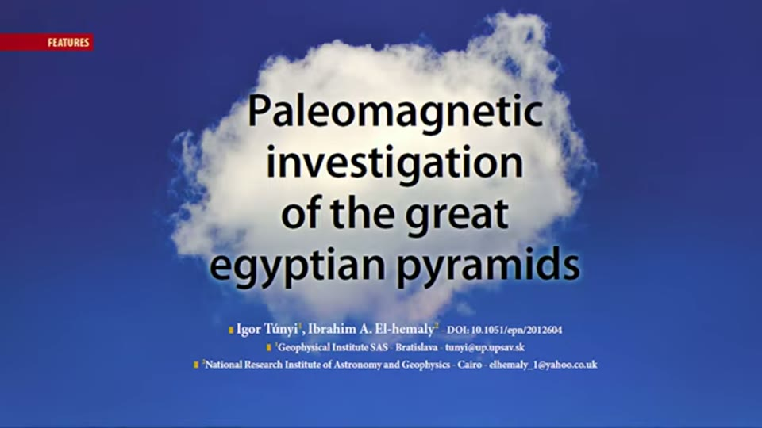
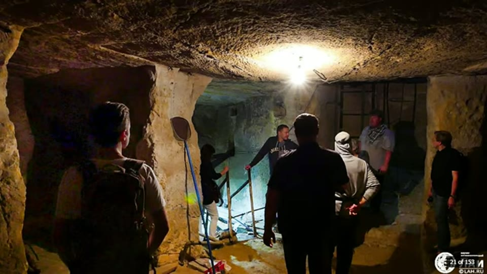
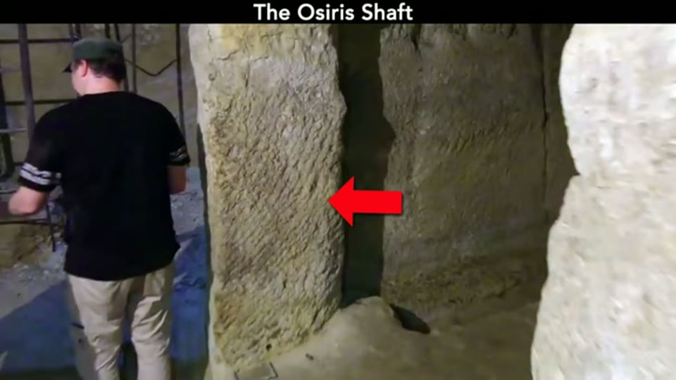

Curious Being
Were the Egyptian Pyramids Originally a Prehistoric Mine?
Tina · 20 min · watch on YouTube · summarised 2026-09-27
A deliberate revisit. Three years after the original series she sets the whole case out again in one video: the Egyptian stone pyramids were not built by dynastic Egyptians but are the remains of a mining operation run by a lost civilisation, and the pyramids themselves are its waste storage.
No new physical evidence is presented. What is new is that the material-analysis literature — credited across the earlier videos as "several studies" and "multiple teams of researchers" — is shown on screen with names attached.
The citations, at last
00:36–01:28 Her first stated reason is that the blocks are artificial reconstituted limestone, first proposed by Joseph Davidovits in the late 1970s. Three sources appear behind that claim, and they are legible:
| what is on screen | what it gives |
|---|---|
| a news report of a study by Professor Gilles Hug of ONERA, the French national aerospace research agency, and Professor Michel Barsoum of Drexel University, published in the Journal of the American Ceramic Society | the pair used X-rays, a plasma torch and electron microscopes to compare pyramid fragments with stone from the Toura and Maadi quarries, and found "traces of a rapid chemical reaction which did not allow natural crystallisation" — inexplicable for quarried stone, they say, and comprehensible if it was cast |
| the title page of "Paleomagnetic investigation of the great egyptian pyramids", Igor Túnyi and Ibrahim A. El-hemaly, DOI 10.1051/epn/2012604 | the same paper quoted in the 2021 video |
| the journal page for "Were the casing stones of Senefru's Bent Pyramid in Dahshour cast or carved?: Multinuclear NMR evidence" — MacKenzie, Smith, Wong, Hanna, Barry and Barsoum, DOI 10.1016/j.matlet.2010.10.035 | the abstract she quotes: the casing stones are Tura quarry limestone grains "cemented with an amorphous calcium-silicate gel formed by human intervention, by the addition of extra silica, possibly diatomaceous earth, from the Fayium area" |


Two of the three material analyses, cited well enough that a reader can go and read them.

The third analysis, and the methods list she runs through in the narration.
Her summary of them is that they "all have proven" the core stones and casings of several pyramids are concrete-like, that one study found silicon dioxide nanoscale spheres, and therefore:
Bronze age Egyptians did not have nanotechnology – thus they cannot be the creators of these impressive pyramids.
The page she takes the nanospheres from says the opposite. Her highlight sits on the sentence reporting Barsoum and his student Aaron Sakulich finding the spheres. Two paragraphs below it, in the same screenshot, the researchers are quoted concluding that the material is so true to natural limestone that it "has misled generations of Egyptologists and geologists" — "because the ancient Egyptians were the original, albeit unknowing, nanotechnologists". The same passage calls it 4,500-year-old limestone.

The source of the nanotechnology claim — and of the conclusion she draws the opposite of.
The three facts she says get overlooked
The plateau was higher 03:18–06:01. Citing a 2020 paper, she reports that Giza was geologically continuous with the Mokattam formation across the Nile, which stands 200 m above the river against Giza's 110 m; and that from the summed mass of the pyramids the researchers proposed the area was once at least 50 m higher. Original rock hills survive inside two pyramids — about 11.5% of Khafre's volume and 23% of Khufu's.
The page she highlights for those percentages is worth reading around. Immediately above her highlight the same paper gives around 160 million tons of rock and a height that "could have reached level +160 m or higher" — not the 50 m she narrates — and says that eight ramps were used to roll the blocks down, with an example still in front of the second pyramid. The source for her premise gives an ordinary construction account of it.

The published basis for the lost height of the plateau, and for the rock hills surviving inside two pyramids.
Which gives the question the whole thesis turns on: why cut 50 m off a plateau, pulverise it, cast it into blocks and stack the blocks back up, when carving the pyramids directly out of the bedrock would have been easier and structurally sounder?
The pyramids are nearly solid 06:08–07:31. The Great Pyramid's openings come to 0.014% of its volume — "a glass of water in a pool". Khafre and Menkaure are solid, with chambers cut in the bedrock beneath. And the passages run 3 ft to under 4 ft high, so nobody walks through them upright.
The shafts 09:07–11:46. This section is fuller than its equivalent in the earlier videos, because she states the accepted explanation and its evidence before answering it. Giza has numerous large shafts; ground-penetrating radar suggests tunnels and vertical shafts at 12 to 25 m and deeper in places. At Saqqara the three Persian shafts by the pyramid of Unas are given as 8 × 10 m in section and 23–27 m deep; the Step Pyramid's central shaft as 7 m square and 28 m deep. Dahshur has radar indications of sediment-filled cavities, Abusir has large shaft tombs.
Egyptologists claim that these underground structures are shaft tombs, along with pyramids as segments of the burial customs. Coffins, murals and funerary objects have been recovered from some shafts.
Her answer is repurposing: if the pyramids predate the dynastic Egyptians, the shafts may too, and later Egyptians adapted them for burial and copied the style.

The scale of the shafts, which is the reason she compares them to mine shafts rather than to tombs.
The mine
11:46–18:55 Inside the Osiris Shaft she points to dark reddish veins in the limestone as a sign of iron ore, and to long, uniform, evenly spaced tool marks on the walls and ceilings that she reads as modern mining machine marks — the same marks, she says, as in the Great Pyramid's subterranean chamber and on some Giza megaliths.

The marks she reads as modern mining machine marks.
What operation would contain many vertical underground shafts, remove over 50 m of rock from the limestone plateau, pulverize the rocks, cement and turn them into concrete blocks, then stack these millions of blocks to several massive pyramids…? I can think of a single answer: a mining operation.
The rest is the waste-storage case from the 2021 video, compressed: overburden removal and crushing are ordinary mining; the industry produces over 100 billion tons of waste a year; tailings ponds are miles across, hundreds of feet deep and have failed with hundreds of deaths; modern "permanent" storage means several decades. Cemented tailings paste would be better and does not yet exist at scale — so the builders were ahead of us in waste management. The casing stones become the protective cover, and the small interiors the drainage system.
What you can check yourself
- All three material-analysis sources can now be read. Two DOIs and a journal name are on screen. This is the single most useful thing in the video: the papers are findable, and a reader can compare what they conclude with the use made of them.
- The article she quotes about the nanospheres is on screen in full paragraphs, including the researchers' own conclusion about who made the material. It is a short read and it settles what that source claims.
- The 2020 plateau paper's figures — 200 m for Mokattam, 110 m for Giza, at least 50 m of removed rock — are published and checkable, as are the rock-core percentages inside Khafre and Khufu.
- The shaft dimensions are survey figures: the Persian shafts at 8 × 10 m and 23–27 m deep, the Step Pyramid's central shaft at 7 m square and 28 m deep.
- That coffins, murals and funerary objects came out of these shafts is an excavation record, and she reports it accurately.
- The 0.014% figure follows from published chamber dimensions and the pyramid's volume.
- Mine waste tonnages, tailings pond dimensions and the recorded dam failures are industry statistics.
- The Osiris Shaft is open to visitors, so the veins and the tool marks can be photographed and measured by anyone who goes.
What the video does not settle
- The source of the nanosphere claim contradicts the conclusion drawn from it. The researchers quoted in her own screenshot attribute the material to the ancient Egyptians and date it to 4,500 years ago. Her inference — nanotechnology, therefore not Bronze Age Egyptians — is made over a page that says the Egyptians were "the original, albeit unknowing, nanotechnologists". The video does not mention the disagreement.
- "All have proven" is not what any of the papers say. The NMR abstract on screen says the results suggest; the news report quotes a claim about chemistry; the paleomagnetic paper concludes for a mixture of natural and artificial blocks. None of that is proof, and the casing-stone paper's own title attributes the Bent Pyramid to Sneferu.
- None of the cited analyses dates the blocks. All three are about what the material is. The video moves from that to who made it.
- "I can think of a single answer" is stated as the argument. No other candidate operation is considered and none is excluded; the inference rests on what occurred to her.
- Iron ore is identified by colour. Reddish veins in limestone are read as ore with no assay, no sample and no mineralogy.
- The tool marks are described, not measured. "Long, uniform and evenly spaced" is the claim; the frame the arrow points at shows a densely pocked surface rather than long parallel grooves, and no width, spacing or depth is given anywhere. Her own later work sets out a test for this, and it is not applied here.
- Repurposing is asserted without a criterion. Nothing is offered that would distinguish a reused prehistoric shaft from one cut for a tomb.
- Nothing is sampled for the mine. Three analytical studies are cited for what the blocks are made of, and none is asked what else is in them.
- The mass figure has drifted. Over 13 million tons for the three pyramids here, over 12 million in the 2021 statement.
- It is a summary, and it says so. Every supporting argument — the interiors, the ore, the dating, the Sphinx enclosure, the power plant and chemical plant theories — is delegated to other videos.
See also
What were Great Pyramids' Function If Not Tombs? — the 2021 original of this argument, with the six stated similarities to dry-stack tailings design.
Prehistoric Mining: What was Mined on the Giza Plateau — the plateau evidence and the case for iron.
The Osiris Shaft — the shaft this video treats as the mine.
The Mystery of the Great Pyramid's Interior System? and Egyptian Pyramids' Interior Enigma — the drainage and treatment readings of the interiors summarised here in two sentences.
The Pyramid Chemical Plant Theory and Great Pyramid: Not a Power Plant — the two rival functional theories she names in the closing seconds.